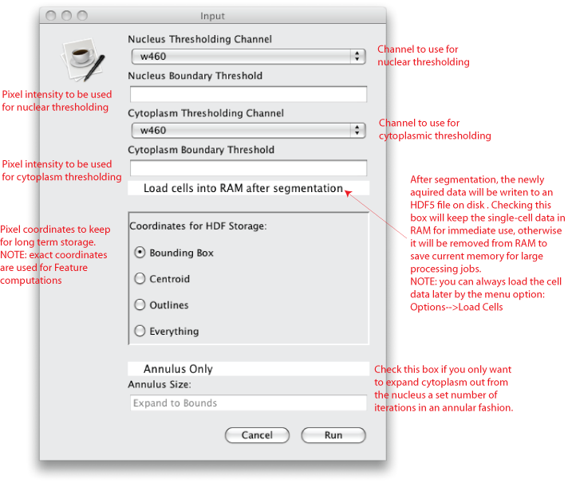
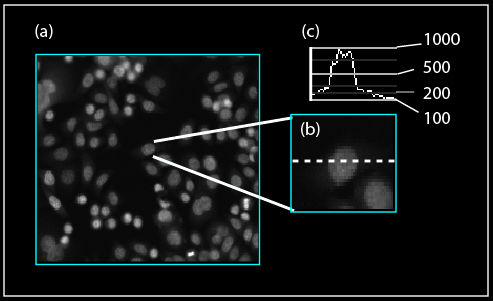
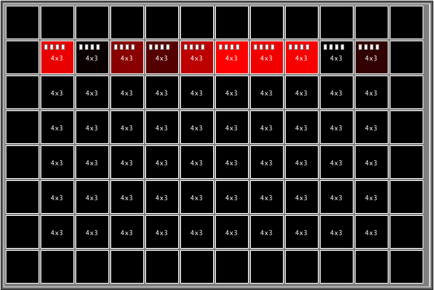
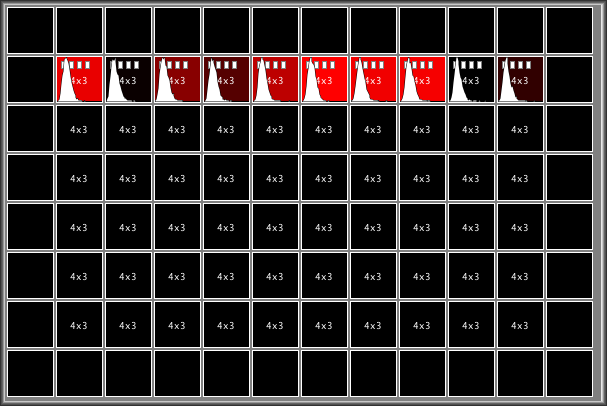
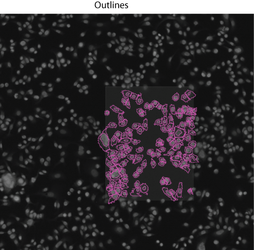
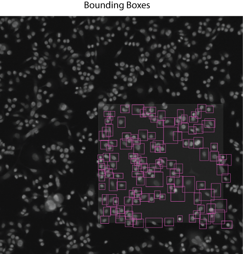
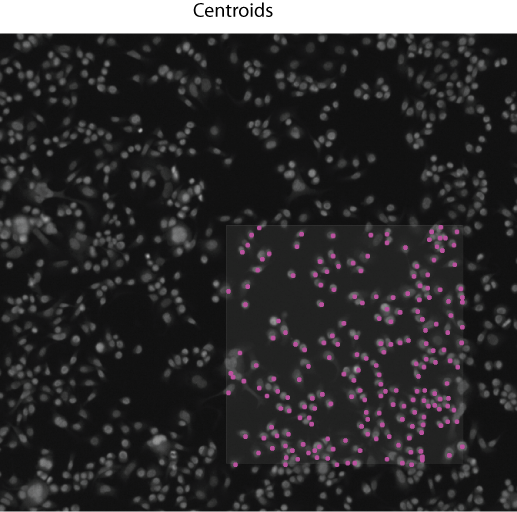

Single-Cell Segmentation
The default ImageRail segmentation algorithm is simple yet effective for the sort of 2D tissue culture systems for which it was originally designed.
To perform a single cell segmentation of the loaded images use the menu item
Process-->Single Cells
The following dialog should launch:

Parameter Selection:
Depending on what version of ImageRail you have, or what algorithm you are using, this may look different, but in the default
version there are 2 essential parameters the user must supply:
- Nucleus Threshold
- Cytoplasm Threshold
For both the nucleus and cytoplasmic thresholds, the user must specify which channel should be used for each threshold.
NOTE: they channels used to threshold the nucleus can be different than that used to threshold the cytoplasm.
To acquire the numerical values for each threshold, open a sample image of the wells you want to segment.
Mousing over the image will display a pixel intensity value on the right margin of the image viewer.
By mousing around you can determine the approximate values for the (1) background (2) transition from background-->cytoplasm and (3) cytoplasm-->nucleus.
In the example below, 2 blue stains have been used. A Hoeschst stain has been used to stain the nuclei and a blue whole
protein dye has been used to mark proteins in the cytoplasm. Note that the stains have drastically different intensity values
such that it is possible to select 2 different thresholds for the different compartments while only using a single fluorescent channel.
In this example, possible thresholding valuse could be:
- Nucleus = 500
- Cytoplasm = 200

Load Cells into RAM after Segmentation:
Unless this box is checked, the single-cell data for each processed wells will be cleared from the RAM and only cached to an HDF5 file on the hard drive.
If processed for single-cells, the plate will display the number of available HDF5 files for each well. The icons look like little
white documents within the wells as shown in the top row of the plate below. Note there will be a seperate HDF5 file created for each image field set.

In this example, the single-cell data has not been loaded. By using the menu option, Options-->Load Cells, or by clicking the Load Cells into RAM after Segmentation
checkbox before processing the wells, the cells will be loaded into RAM and display a mini-histogram of all cells for the selected feature.

Coordinate for HDF5 Storage:
Once a full segmentation has been performed, all features are computed for each cell using the complete coordinate list. See this page for a
more detailed description of the segmentation and feature computation process.
Though for long term storage and data sharing, a complete coordinate list for all cells may not be neccessary. In fact, in most situations a single centroid
or bounding box is sufficient and drastically reduces the amount of data to be stored on the hard drive.



Annulus Only:
Occasionally you may not want to segment do a fully cytoplasmic segmentation and would prefer to only segment an annulus around the nucleus. By checking this box,
you can specify the thickness of the annulus.
ImageRail is ©Copyright 2010 - Bjorn Millard